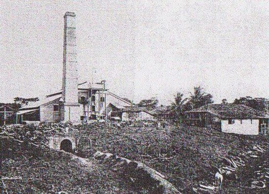

O prédio foi inaugurado com forma retangular. Possui 1,8 mil m² de área construída em
três pavimentos, paredes externas em alvenaria aparente de tijolos maciços e uma
chaminé com a altura de cem pés ingleses, cerca de 30 metros. A firma inglesa Fawcett,
Preston & Cia, de Liverpool, foi responsável pela estrutura metálica, o maquinário e a
aparelhagem, a construção do Engenheiro e da ferrovia. Os engenhos eram criados no
período colonial para uma só função: a produção. Tendo como base a mão de obra
escrava, o engenho, a grande propriedade produtora de açúcar, era constituído,
basicamente, por dois grandes setores: o agrícola - formado pelos canaviais -, e o de
beneficiamento - a casado-engenho, onde a cana-de-açúcar era transformada em
açúcar e aguardente. O Engenho Central de Pindaré-Mirim é um dos mais expressivos
exemplares dos engenhos centrais brasileiros.
Inaugurado em 1884, sendo um
importante e exemplar arquitetônico açucareiro do século XIX, portanto, é símbolo
histórico do processo econômico agroindustrial do estado. Construído no auge da
produção açucareira maranhense, tornou-se um propulsor do desenvolvimento
tecnológico e em 1883, por iniciativa da empresa, foi instalado um sistema de iluminação
elétrica para os habitantes da região, em situação pioneira no Brasil. A mecanização
da cana-de-açúcar tem apresentado um processo de aprimoramento contínuo desde
1975, fundamentada na padronização de operações, adequação da potência dos
tratores à implementos com maior capacidade de trabalho, programação e controle da
manutenção, treinamento de operadores, incorporação de novos equipamentos para
plantio, aplicação de torta e eliminação de soqueira, entre outros. Em meio a
modificações na economia do Império da época, como a extinção do tráfico de escravos,
as relações de produção passaram a sofrer maiores transformações.
O Engenho Central de Pindaré visto hoje como uma âncora capaz de dar uma sensação de continuidade a sua utilidade não mais como uma fábrica açucareira que funcionou ainda no século XIX, mas como um espaço que retrata um legado desde suas instalações arquitetônica peculiar, a localização estrategicamente pensada para aquela época, maquinários e demais aspectos elementares que permaneceram existindo materialmente e outros que são vivos e ricos em detalhes na nossa memória de modo que é a expressividade mesmo em uma nova roupagem trazida pelo olhar de quem viu como era e de como está hoje.

Nos anos de 1870 os engenhos maranhenses introduziram varias unidades
movidas a vapor, durante a produção, é extraído o açúcar da garapa da cana,
consiste na evaporação da agua do caldo da até que seja atingida a
concentração precisa para a formação dos cristais, após a extração a garapa
era encaminhada para a cozinha do engenho, onde era filtrada e realizada a
fervura, para que a água que constitui cerca de 80% do suco evaporasse.
No Maranhão durante muito tempo a lenha foi o único combustível empregado,
embora desde 1912 fosse conhecida a pratica da queima de bagaço de cana
nas fornalhas dos engenhos brasileiros. Além de manufaturar o açúcar bruto, os
engenhos também produziam aguardente, nos períodos de dificuldades o
aguardente era produzido através da própria garapa, descartando a produção
do açúcar, além da produção ser bem mais simples e gerar um bom lucro. Os
transportes afetavam diretamente os produtores de açúcar e de aguardente, que
tinham que suportar os custos do transporte de cana e açúcar até o engenho,
depois o transporte desses produtos já manufaturados até os portos de
embarque localizados às margens dos rios, de onde seguiam até o porto de São
Luís de onde eram exportados para o exterior.
Com a criação da Companhia de Navegação a Vapor que tinha o monopólio
desse tipo de transporte nos principais rios da província mudou o sistema de
transporte no Maranhão. Por deter o monopólio de tal navegação a Companhia
não tinha concorrentes e apresentava um serviço de baixa qualidade, somente
em 1884 surgiu no Maranhão a Companhia Fluvial Maranhense, de modo a
fazer concorrência com a primeira companhia crida. Com a instalação de linhas
férreas no Brasil por volta de 1854 para a escoação da safra, enquanto isso no
Maranhão só havia interesse para a navegação a vapor, uma vez que até o final
do século só havia dois trechos de ferrovia, sendo um no engenho São Pedro
com 10 km de linha inaugurada em 1884, e a estrada de ferro Caxias-Cajazeiras
inaugurada em 1895 com 77,3 km de extensão.
Durante a segunda metade do
século XIX, ocorreram algumas tentativas de modernização das indústrias
açucareiras maranhenses, era utilizadas varias fontes de energia como a queima
do bagaço da cana, o que não era muito eficiente. Concebido por empresários
franceses nos princípios do século engenhos que apresentavam alta produção
em outros países, pois somente 17 dessas maquinas produziam mais açúcar
que os 1500 engenhos pernambucanos em 1873. Por volta de 1875, começaram
a surgir diversas propostas objetivando a criação desses Engenhos Centrais no
Maranhão, depois de varias discussões sobre qual engenho se tornaria um
Engenho Central, foi decidido que a melhor decisão seria o Engenho São Pedro,
somente em 1884 depois de uma longa obra e vários conflitos o Engenho Central
São Pedro foi inaugurado.
Infelizmente o Engenho fracassou, um dos motivos
foi o fato de continuarem usando os mesmos meios de produção durante muito
tempo, a falta de inovação na lavoura, a queima da palha, a falta de ferramentas
adequadas para o preparo da terra, outro ponto que pode ter influenciado
processo foram as grandes dívidas que se tornaram impagáveis levando o
Engenho a falência. Um dos símbolos históricos de Pindaré-Mirim é o Engenho
Central, hoje uma construção no centro da cidade, em vias de recuperação pelo
Instituto do Patrimônio Histórico e Artístico Nacional.
O Engenho pertencia à
Companhia Progresso Agrícola, instalada em 1876 e que foi responsável por
grandes transformações socioeconômicas em Pindaré-Mirim e em toda a região
até 1915, quando a Companhia entrou em declínio, sobretudo por causa dos
altos juros bancários, falta de matéria-prima e de mão-de-obra especializada.
Hoje em dia o Engenho Central de Pindaré-Mirim também conhecido com
Engenho São Pedro é um edifício histórico que abriga o Centro de Cultura
Engenho Central de Pindaré-Mirim.
É um dos mais expressivos engenhos
centrais brasileiros. O Engenho passou por uma várias reformas em 2018 pelo
Instituto do Patrimônio Histórico e Artístico Nacional (IPHAN), passando por
adaptações para receber o Centro de Cultura Engenho Central de Pindaré-Mirim,
com exposições permanentes e temporárias, memorial, biblioteca, cineatro,
salas de capacitação e realização de eventos culturais, com isso entrou em
funcionamento em 2019.